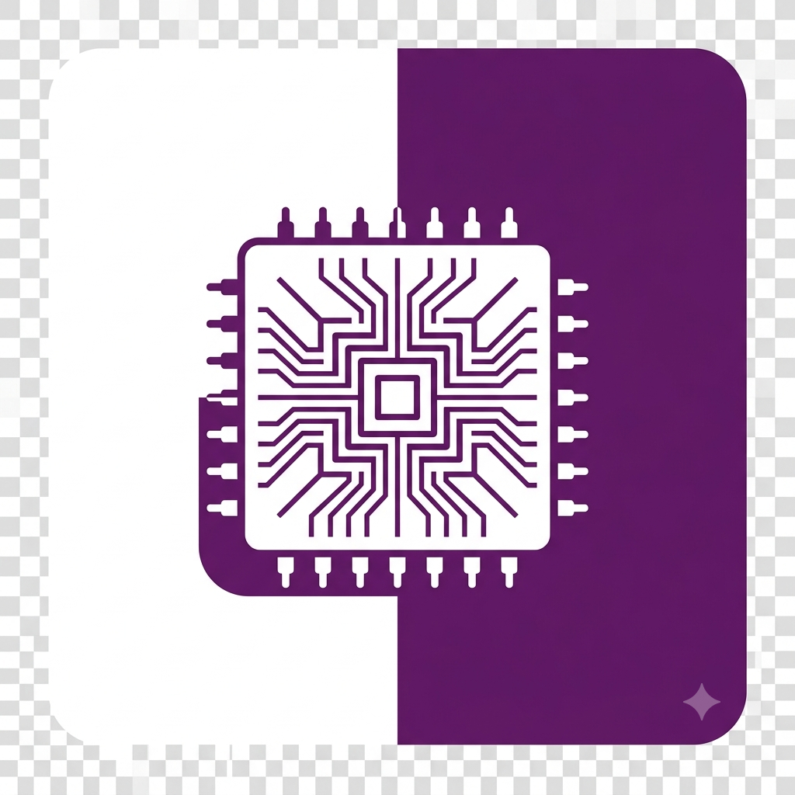

Primeiro post
Por: Davi Evarini.
Seja muito bem vindo ao meu blog, sobre programação e robotica.
Vamos compartilhar conhecimentos sobre tecnologia e programação

Por: Davi Evarini.
Seja muito bem vindo ao meu blog, sobre programação e robotica.